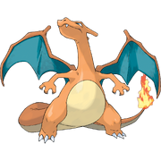
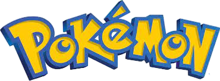
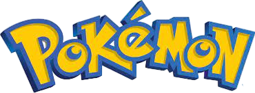

-
Bulbasaur #001

- Grama
- Veneno
Há uma semente de planta em suas costas desde o dia que este pókemon nasce. A semente cresce lentamente.
-
Ivysaurr #002

- Grama
- Veneno
Ha um broto nas costas desse pokemon. Para suportar seu peso, as pernas e o tronco do ivysaur fica grossos e fortes se começar a passar mais tempo sob a luz do sol é um sinal que o broto florecerá em uma flor grande em breve.
-
Venusaur #003

- Grama
- Veneno
Sua planta floresce quando está absorvendo energia solar. Ele permanece em movimento para buscar a luz solar.
-
Charmander #004

- Fogo
Tem preferéncia por coisas quentes.Quando chove, diz-se que o vapor jorra da ponta da sua cauda.
-
Charmeleon #005

- Fogo
Gosta muito de brigas, por isso busca constantemente por adversários. Ele ataca com suas garras afiadas e usando sua cauda como chicote de fogo. Pode soltar chamas azuis quando muito animado.
-
Charizard #006
- Fogo
Seu fogo é quente o suficiente para derreter rochas. Quando nervoso, a chama em sua cauda queimará intensamente. É orgulhoso e voa pelos céus em busca de adversários poderosos.
-
Squirtle #007

- Agua
Quando nasce, seu casco é mole, mas logo endurece. Cutucando com o dedo fará os pedaços de seu casco saltar. Ele entra dentro do casco quando se sente ameaçado
-
Wartortle #008

- Agua
É muito inteligente, sabe controlar as orelhas e o rabo para manter o equilíbrio na água e nadar em altas velocidades. Seu rabo felpudo é símbolo de longevidade.
-
Blastoise #009

- Agua
Um Pokémon brutal com jatos de água pressurizada em sua concha. Eles são usadas para ataques em alta velocidade. Os bicos de água são muito precisos.
-
Caterpie #010

- Inseto
Caterpie Como forma de proteção, Caterpie libera um cheiro horrível através de suas antenas. Suas patas pegajosas são capazes de andar em qualquer tipo de superfície.
-
Metapod #011

- Inseto
Metapod tem a concha que cobre o corpo deste Pokémon é tão dura quanto uma laje de ferro. Metapod não se move muito. Ele fica parado porque está preparando suas entranhas suaves para a evolução dentro da casca dura.
-
Butterfree #012

- Inseto
- Voador
Butterfree tem o corpo da cor azul-púrpura escuro. Ele tem grandes asas veias, que são brancas com manchas pretas. Ele também possue olhos compostos grandes que tendem a ser uma cor avermelhada, suas pernas são cobertas de pêlos finos, o que ajuda na coleta de mel.
-
Weedle #013

- Inseto
- Veneno
Weedle é um pokemon larva pequeno amarelo, laranja ou marrom com um corpo segmentado. A coloração do Weedle serve como aviso contra seus. Weedle tem um ferrão cônico de duas polegadas venenoso em sua cabeça e um farpado em sua cauda, mas todas as outras partes do corpo é esférica.
-
Kakuna #014

- Inseto
- Veneno
Kakuna é um casulo de cor amarela. Tem olhos brancos enquanto seu globo ocular é preto, Kakuna praticamente não se move e fica em árvores naturalmente.
-
Beedrill #015

- Inseto
- Veneno
Beedrill em dois pares de asas arredondadas e um ferrão em seu abdome listrado. Beedrill é altamente territorial e normalmente vive em colônias. Como visto no anime, Beedrill parece estar especialmente preocupados com o bem estar de Weedle e Kakuna, e vai responder de forma agressiva para aqueles que os perturbam.
 
